Presentedby:Sinya
OpinionMining

Outline
• Survey of Opinion Mining
• ClusteringProductFeaturesforOpinionMining
– Introduction
– Related Work
– Algorithm
– Evaluation
– Conclusions
• Comments
2
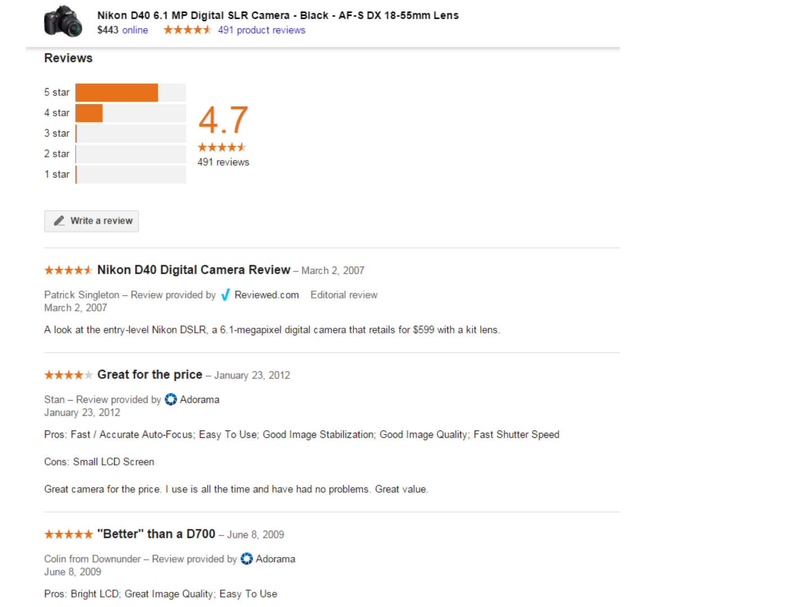
3
https://www.google.com/shopping/
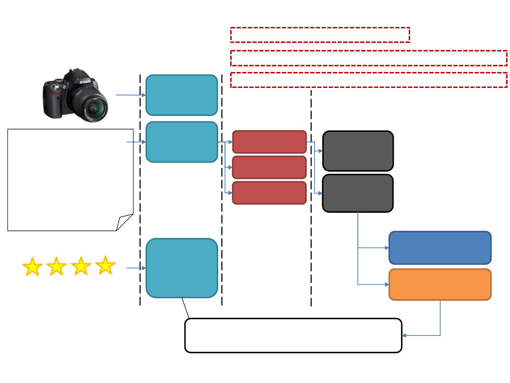
Review Model
object
sentence
sentence
segment
Feature/Aspect
(wordorphase)
review
customer
Score
(opt.)
sentence
segment
Opinionword
(wordorphase)
sentence
sentence
Thiscamerahasgood
auto-focus,andthe
picturequalityofthis
cameraisawesome,
butitisbadinshape.
Thiscamerahasgoodauto-focus,
andthepicture quality ofthiscameraisawesome…
butitisbadinshape.
SentimentOrientationEvaluation
NotEqual
4
5
http://www.debate.org/opinions/
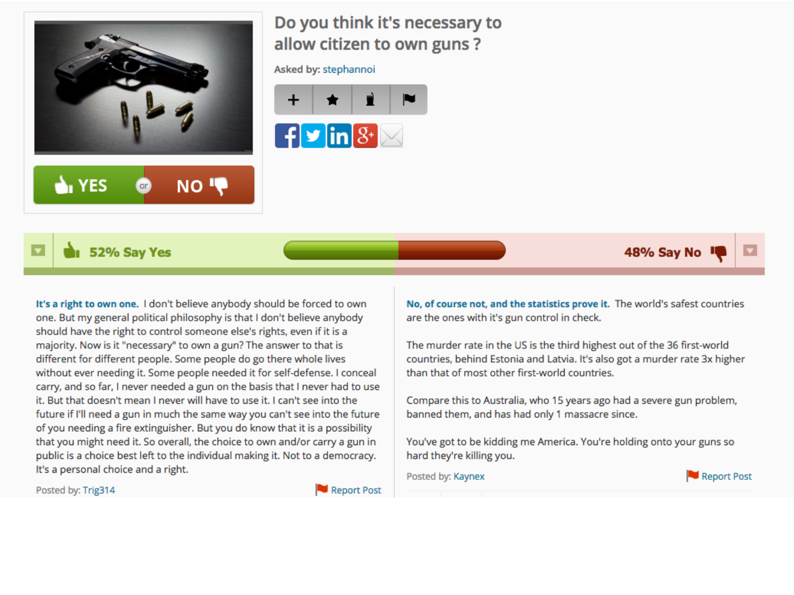
6
http://www.debate.org/opinions/

7
Roadmap
• SentimentAnalysisandOpinionMining
– Documentsentimentclassification
– Sentencesubjectivity&sentimentclassification
– Aspect-basedsentimentanalysis
– Miningcomparativeopinions
– Opinionspamdetection
• BeyondSentiments
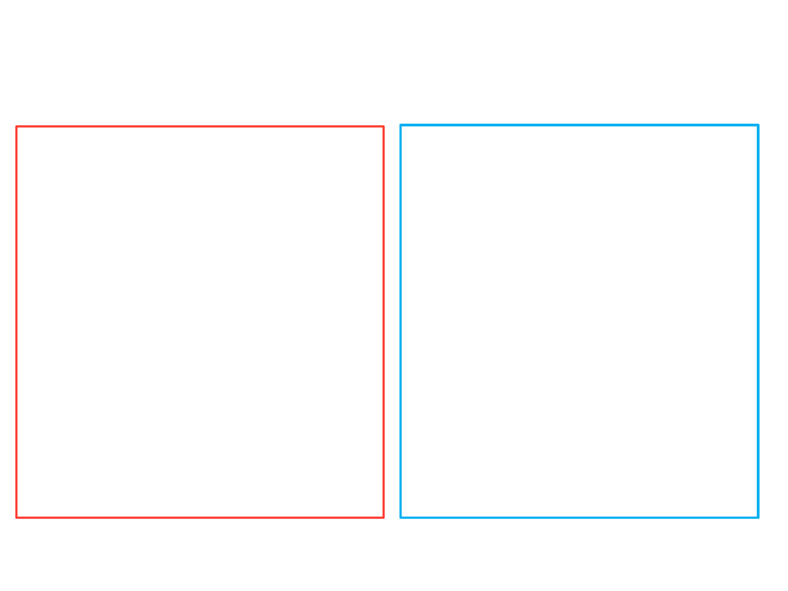
Aspect-based Sentiment Analysis
Review 1
“I bought an iPhone a few days ago. It
is such a nice phone,…”
Review 2
“ The touch screen is really cool. The
voice quality is clear too. It is much
better than my old Blackberry,…”
Review 3
“ However, my mother was mad with
me as I did not tell her before I
bought the phone. She also thought
the phone was too expensive, …”
….
Feature Based Summary of iPhone:
Feature1:touch screen
Positive: 212
• The touch screen was really cool.
• The touch screen was so easy to use
and can do amazing things.
…
Negative:6
• Thescreeniseasilyscratched.
• Ihavealotofdifficultyinremoving
fingermarksfromthetouchscreen.
…
Feature2:voice quality
…
Note: We omit opinion holders
8
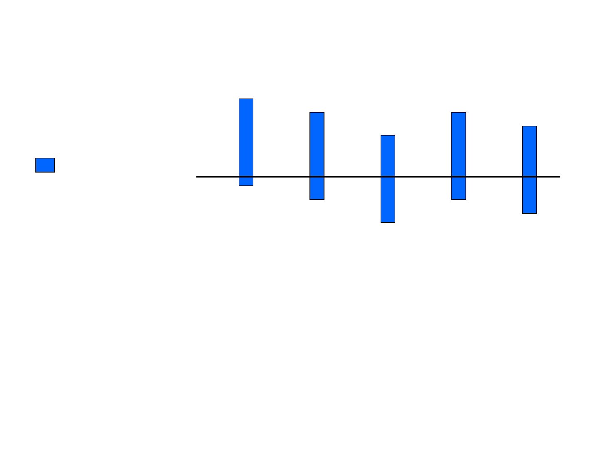
Aspect-based Sentiment Analysis
Summary of
reviews of
Cell Phone
Voice Screen Size Weight Battery
+
_
Extracting Features/Aspect
• Afrequency-basedapproach
• Supervisedlearning
• Doublepropagation E.g.,“Theroomsarespacious”
• Rulesfromgrammar dependency
• Topicmodels(documentgenerativemodel)
9
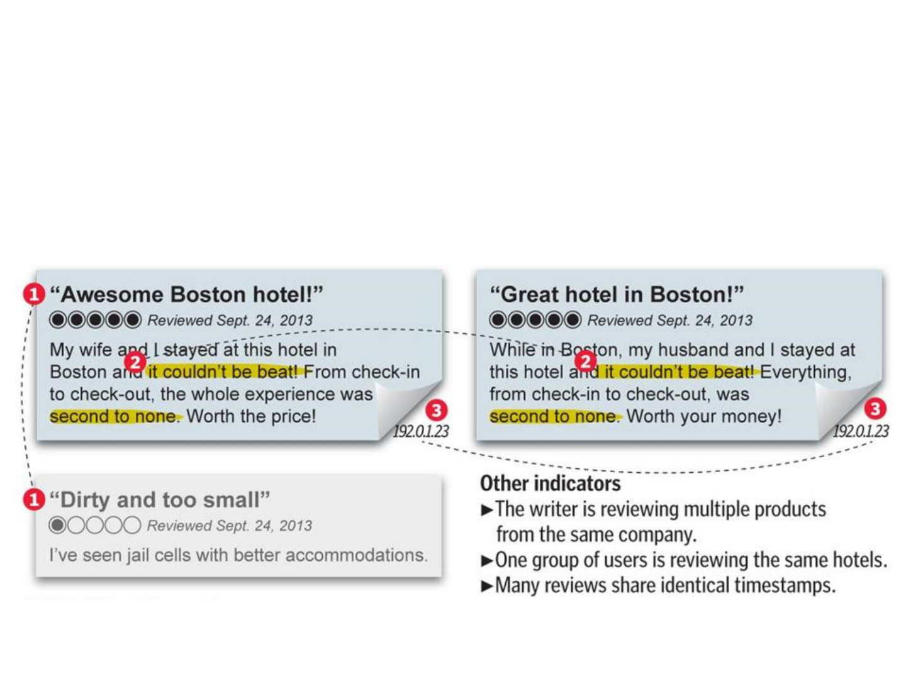
Opinion Spam Detection
findingunexpectedrulesandrulegroups
10

Clustering Product Features for
Opinion Mining
ZhongwuZhai,BingLiu,HuaXu,PeifaJia
WSDM’11,February9–12,2011

Introduction
Insentimentanalysisofproductreviews,oneimportant
problemistoproduce a summary of opinions based on
product features/aspects.
However,forthesame feature, people can express it with
many different words or phrases.
• Thepicturequalityisgreat.
• Theimagelooksvivid.
12
Roadmap
• SentimentAnalysisandOpinionMining
– Documentsentimentclassification
– Sentencesubjectivity&sentimentclassification
– Aspect-basedsentimentanalysis
– Miningcomparativeopinions
– Opinionspamdetection
• BeyondSentiments
13
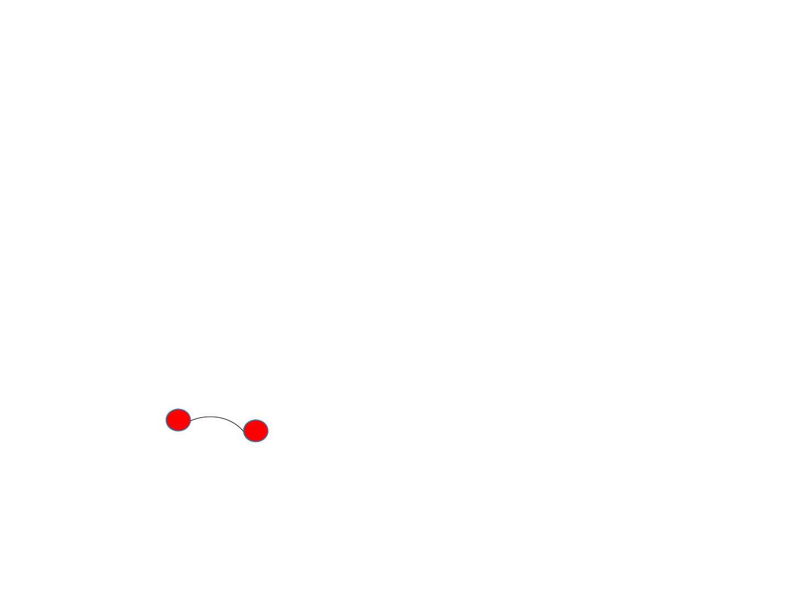
Related Work
14
• similaritymeasure
pre-existing knowledge resources (e.g., WordNet, and semantic networks)
- CareniniG,NgR,andZwartE.Extractingknowledgefromevaluative
text.ICKC.2005(lexical similarity)
- LiuB,HuM,andChengJ.OpinionObserver:Analyzingand
ComparingOpinionsontheWeb.WWW.2005
appearance
design
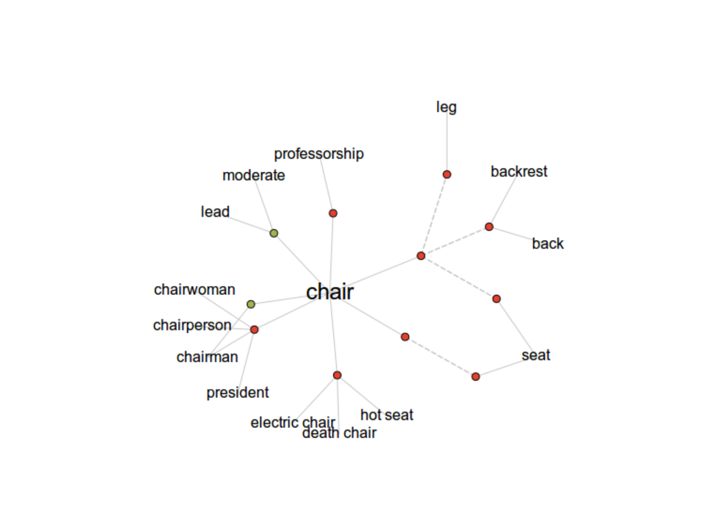
WordNet
15

Related Work
16
distributional properties of words in corpora
- BollegalaD,MatsuoY,andIshizukaM.Measuringsemanticsimilarity
betweenwordsusingwebsearchengines.WWW.2007
- PedersenT.InformationContentMeasuresofSemanticSimilarity
PerformBetterWithoutSense-TaggedText.NAACLHLT.2010

Related Work
17
• topicmodeling
- BranavanSRK,ChenH,EisensteinJ,andBarzilayR.Learningdocument-
levelsemanticpropertiesfromfree-textannotations.ACL.2008
- AndrzejewskiD,ZhuX,andCravenM.Incorporatingdomainknowledge
intotopicmodelingviaDirichletforestpriors.ICML.2009

Contributions of Paper
• Theproblemsolvedinthispaperissemi-supervised learning
taskbutwithoutaskingtheusertolabelanytrainingexamples.
• Theyproposetwosoft constraints tohelplabelsomeexamples
andonepieceofpre-existingnaturallanguageknowledgeto
extractmorediscriminativedistributionalcontextforthe
augmentedEM.
• AnEMalgorithmbasedonnaïveBayesianclassificationis
adaptedtosolvetheproblem,whichallows EM to re-assign
classes ofthelabeledexamplestodifferentclasses.
18
Clustering
Input
Preprocessing
Architecture
19
Data
Labeled
Data
SharingWords
Lexical
Similarity
Context
Extraction
Output
Feature
Clusters
Expectation
Maximization
Clustering
Feature
Expression
Document

Algorithm
Input: asetofreviewsR,andasetofdiscovered
featureexpressionsFfromR
1. Generating Labeled Data L
1) Connectfeatureexpressionsusingsharing words
2) Mergecomponentsusinglexical similarity
3) Selecttheleadercomponentsaslabeleddata
2. Semi-Supervised Learning using EM
20
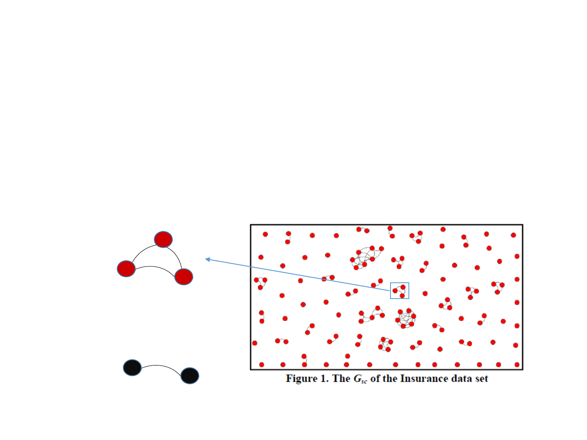
Generating Labeled Data L - Step 1
• sharing words: featureexpressions(rednode)sharingsome
wordsarelikelytobelongtothesamegrouporcluster.
customerservice
customer
support
service
21
photo
quality
food
quality
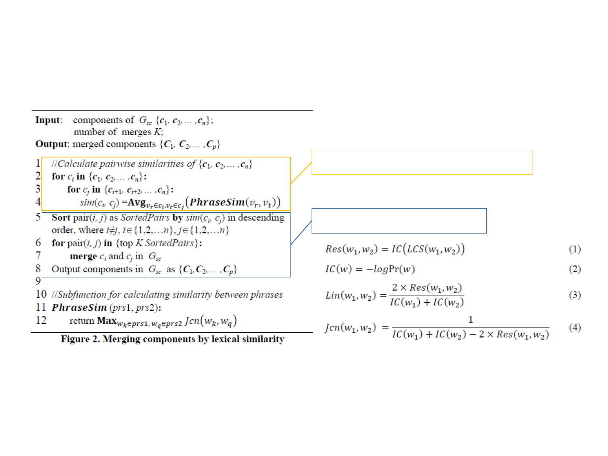
Generating Labeled Data L - Step 2
22
calculatecomponentssimilarities
sortandmergetopkpairs
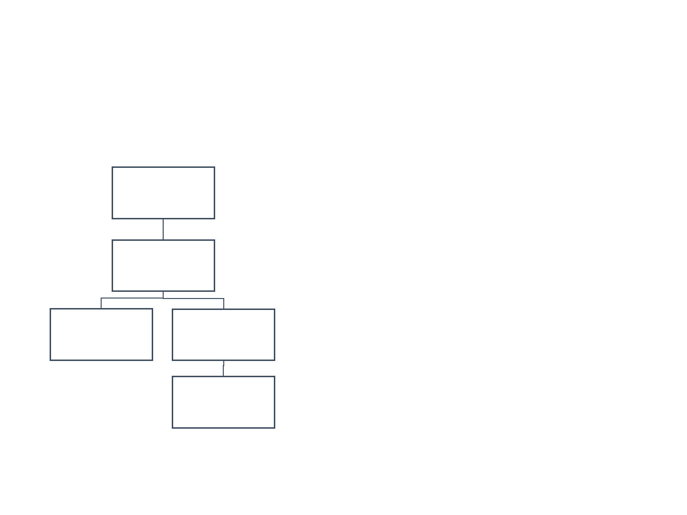
Generating Labeled Data L - Step 2
Object
Vehicle
Boat
Automobile
Car
LeastCommonSubsumer(LCS)oftwo
conceptsAandBisthe most specific
concept which is an ancestor of both A
and B,wheretheconcepttreeisdefined
bytheis-arelation.
23
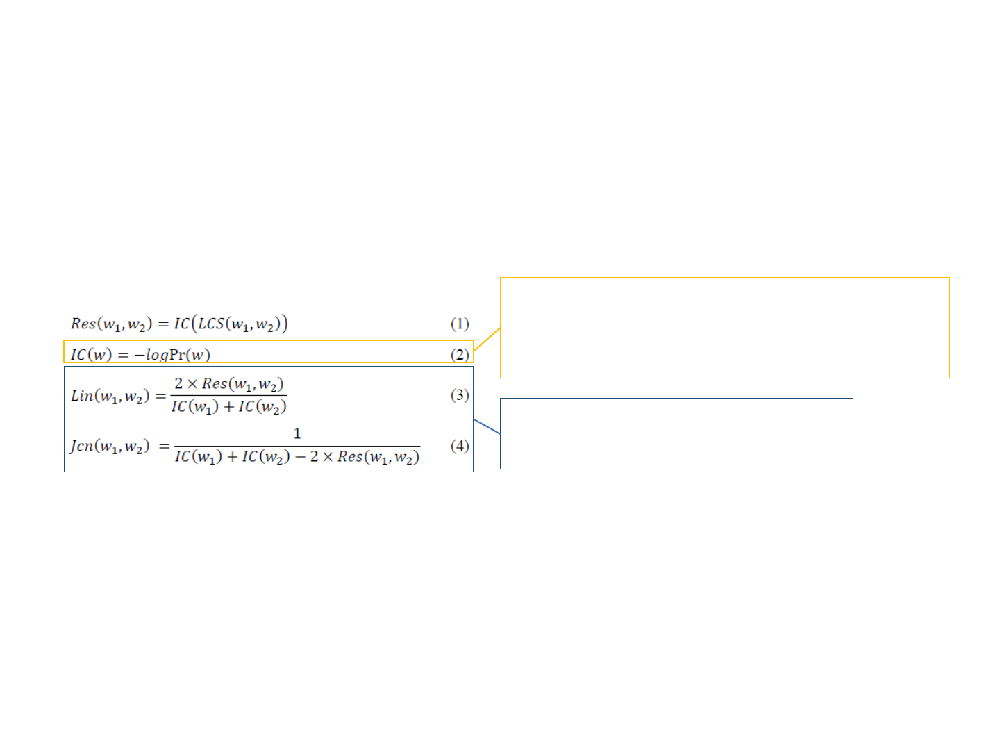
Generating Labeled Data L - Step 2
24
twoformulawhichcalculate
similaritybetweentwowords
Pr(w) istheprobabilityoftheconcept
wordw,basedontheobservedfrequency
countsintheWordNetcorpus

Generating Labeled Data L - Step 3
Thisstepselects k leader components from the all
componentstoformthelabeleddatawithkclassesor
clusters.
25
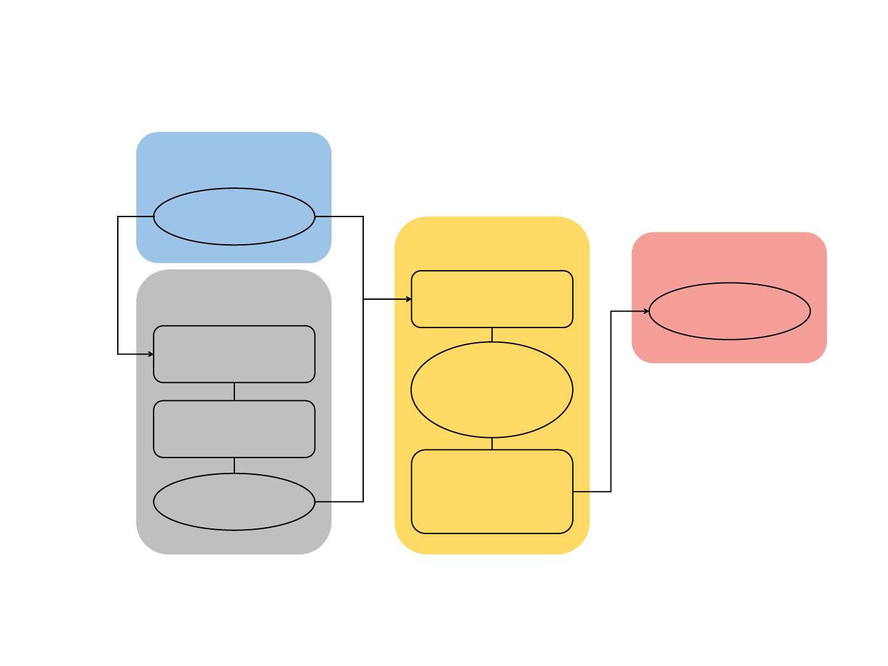
Clustering
Input
Preprocessing
Architecture
26
Data
Labeled
Data
SharingWords
Lexical
Similarity
Context
Extraction
Output
Feature
Clusters
Expectation
Maximization
Clustering
Feature
Expression
Document

Content Extraction - Example
27
“Thepicture quality isgreat,thebattery lifeisalsolong,but
thezoomisnotgood.”

Content Extraction
• Forexample,afeatureexpressionfromL (orU)is
v
i
=“screen”
s
i1
=“TheLCDscreen givesclearpicture”.
s
i2
=“Thescreen istoosmall”.
D
i
={<LCD,screen,gives,clear>,<screen,small>}
LabeledExampleL
UnlabeledExampleU
28
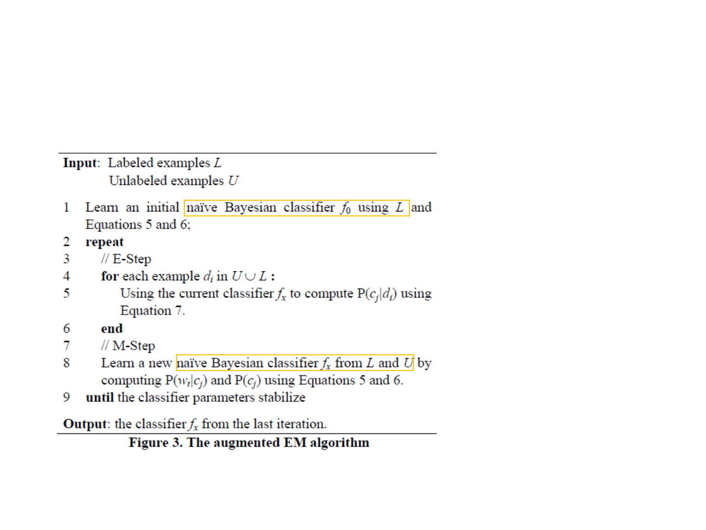
Semi-Supervised Learning using EM
29
Semi-Supervised Learning using EM
• Distributionalinformationiscriticalforfindingdomain
synonymsbecauseitgivesthedomaincontext.
• Theapproachisabletoexplore both domain independent (pre
-existing knowledge) and domain dependent (distributional
information).
30
appearance
design
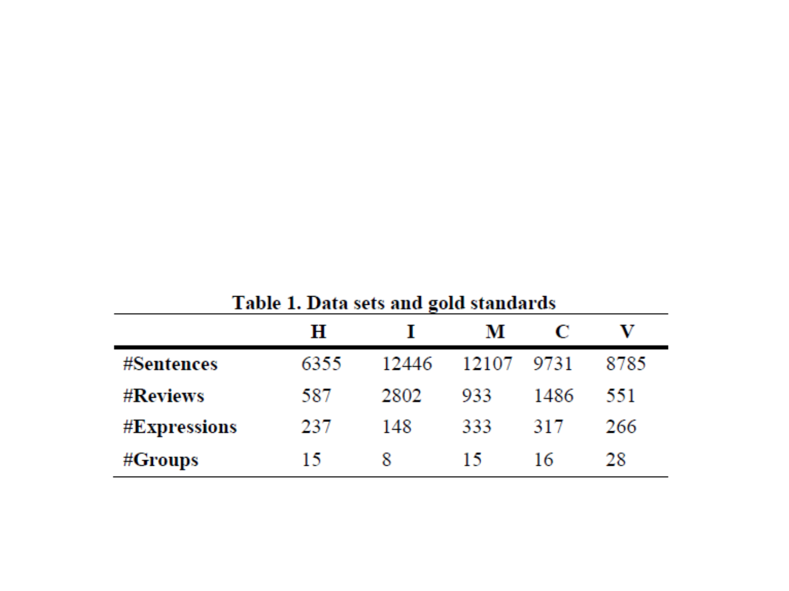
Evaluation – Dataset
• DataSets:Hometheater(H),Insurance(I),Mattress(M),
Car(C)andVacuum(V).
31
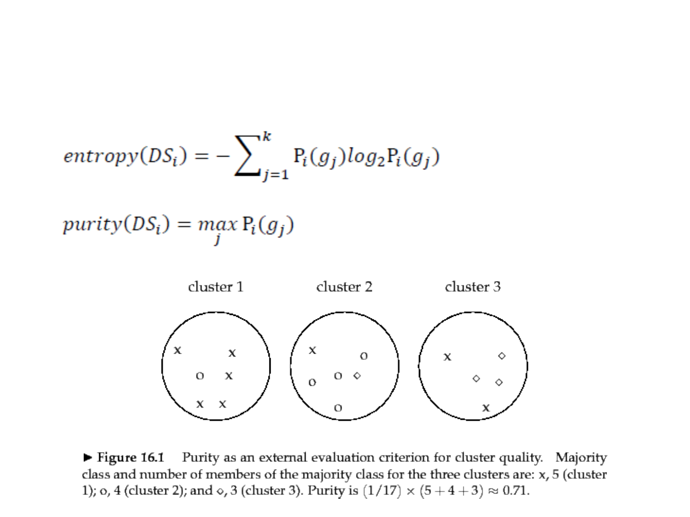
Evaluation – Evaluation Measures
32
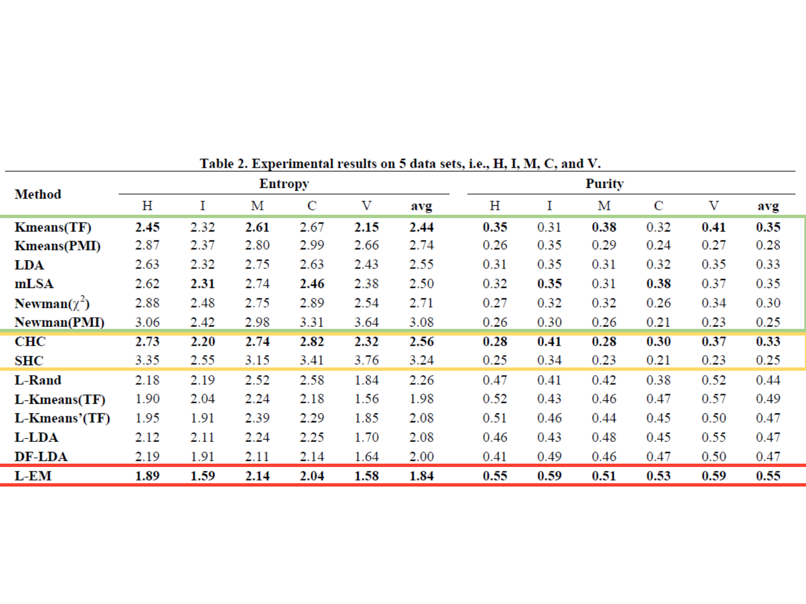
Evaluation – Methods
33
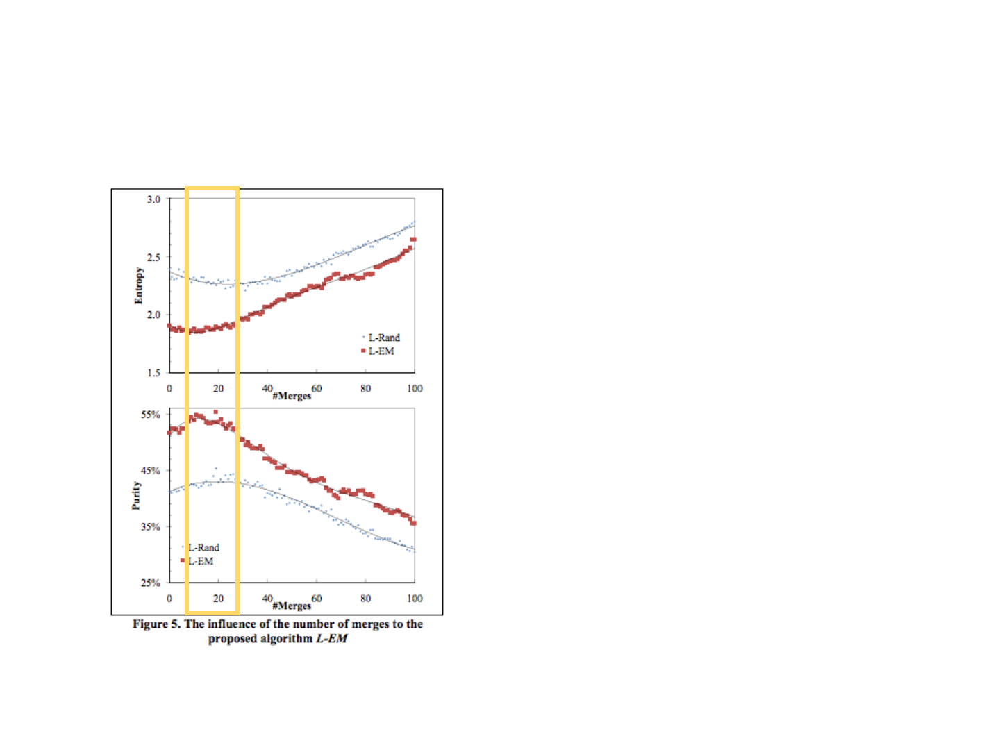
Evaluation – Number of Merges (k)
34
Conclusions
• Theproblemsolvedinthispaperissemi-supervised learning
taskbutwithoutaskingtheusertolabelanytrainingexamples.
• AnEMalgorithmbasedonnaïveBayesianclassificationis
adaptedtosolvetheproblem,whichallows EM to re-assign
classes ofthelabeledexamplestodifferentclasses.
• Theyproposetwosoft constraints tohelplabelsomeexamples
andonepieceofpre-existingnaturallanguageknowledgeto
extractmorediscriminativedistributionalcontextforthe
augmentedEM.
35

Comments - pros
36
• Withoutaskingtheusertolabel
Comments
• Therearesomedomainconstraintwhendoingopinion
mining.
• Notonlyfeaturesextract,whendoingpositiveornegative
opinionclassify.Wecandowithsemi-supervisedlearning.
The iPhone 6 Plus can also be an infuriating device which polarizes opinion.
Apple may be widely held up as a master of modern industrial design, but for
me it has got the iPhone 6 Plus completely wrong. The biggest issue is
ergonomics. The iPhone 6 is a flat, big phone that doesn’t feel particularly
good in-hand, but just about gets away with it because it is relatively compact.
37